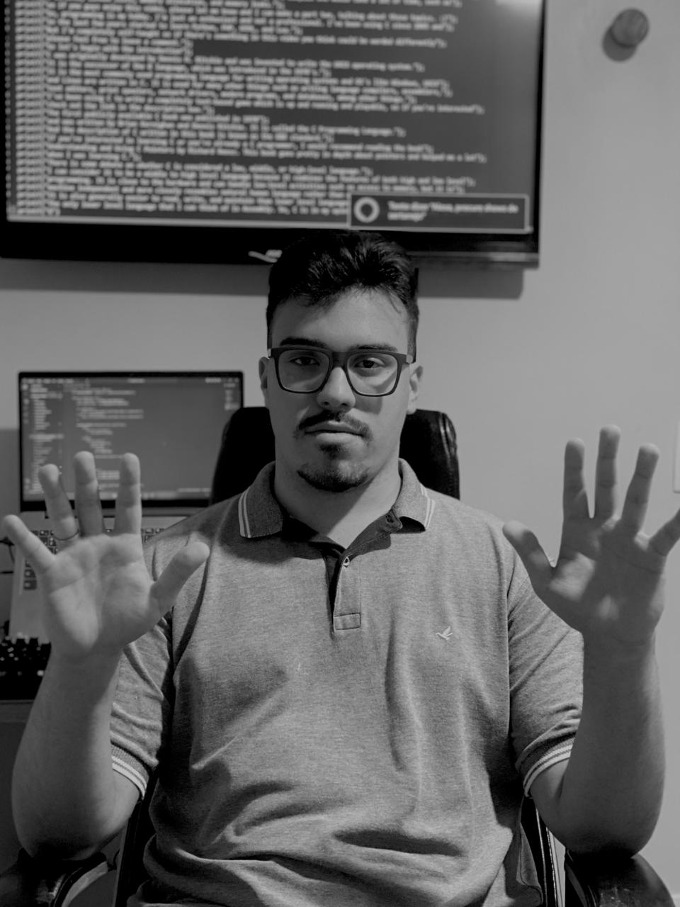

Hi, I'm Gustavo Oliveira, a Software Development student at São Paulo Tech School.
As a passionate film enthusiast, I've always been fascinated by the power of storytelling. It was while watching "Good Will Hunting" that I was deeply moved by the protagonist's journey of self-discovery and the importance of human connection. Inspired by Will's struggle to find meaning in his life, I embarked on a project to create a platform where people can share their love of cinema and connect with like-minded individuals.

The contrast between Will's vast knowledge and his inability to connect with others on a deeper level resonated with me. It made me realize the importance of applying our knowledge to create meaningful relationships. During the 2020 quarantine, as I found myself with more time for introspection, I sought to understand my own purpose in life. "Good Will Hunting" provided me with valuable insights, highlighting the significance of human connection in our increasingly digital world.
I believe that technology has the potential to connect people and solve some of the world's most pressing problems. Inspired by the film and my own experiences, I've decided to pursue a career in software development. My goal is to create innovative solutions that make a positive impact on people's lives.